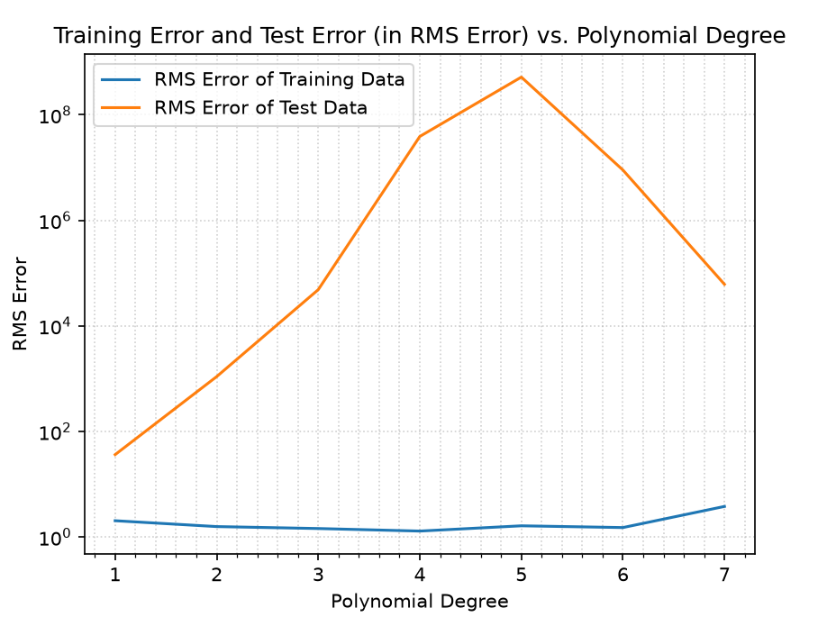
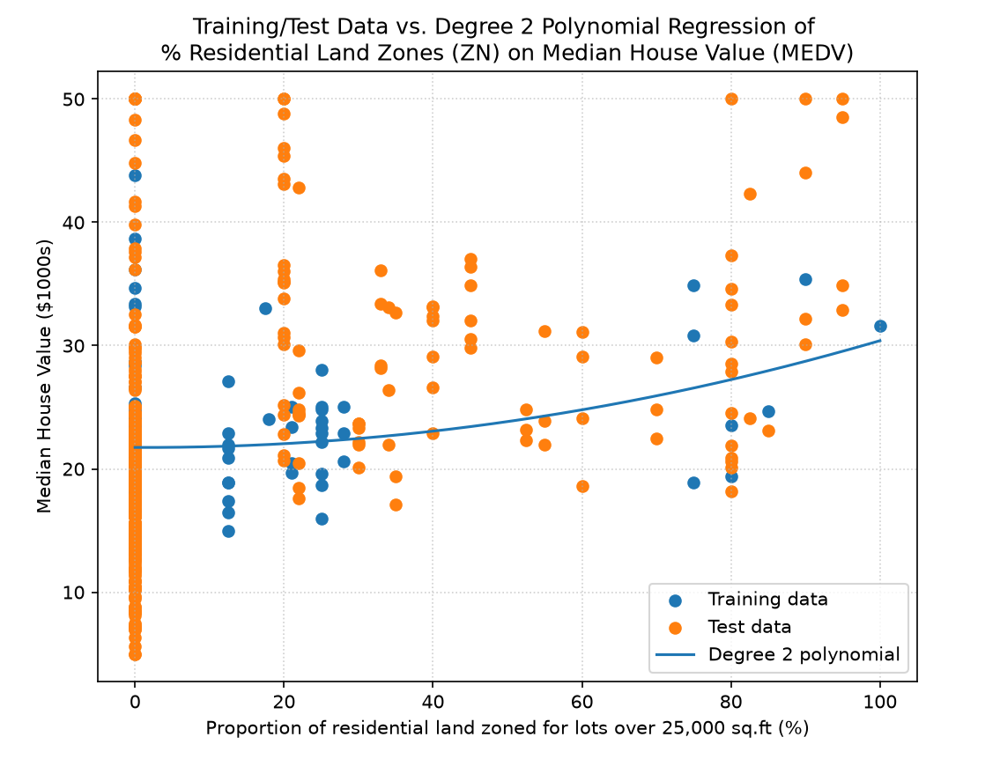
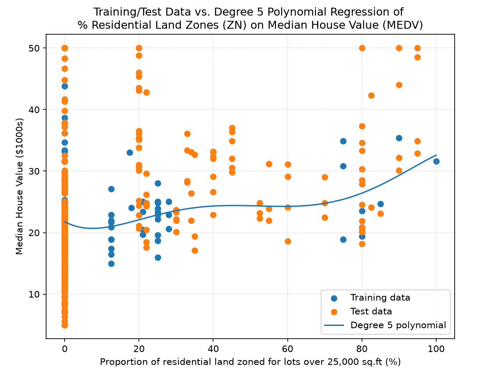
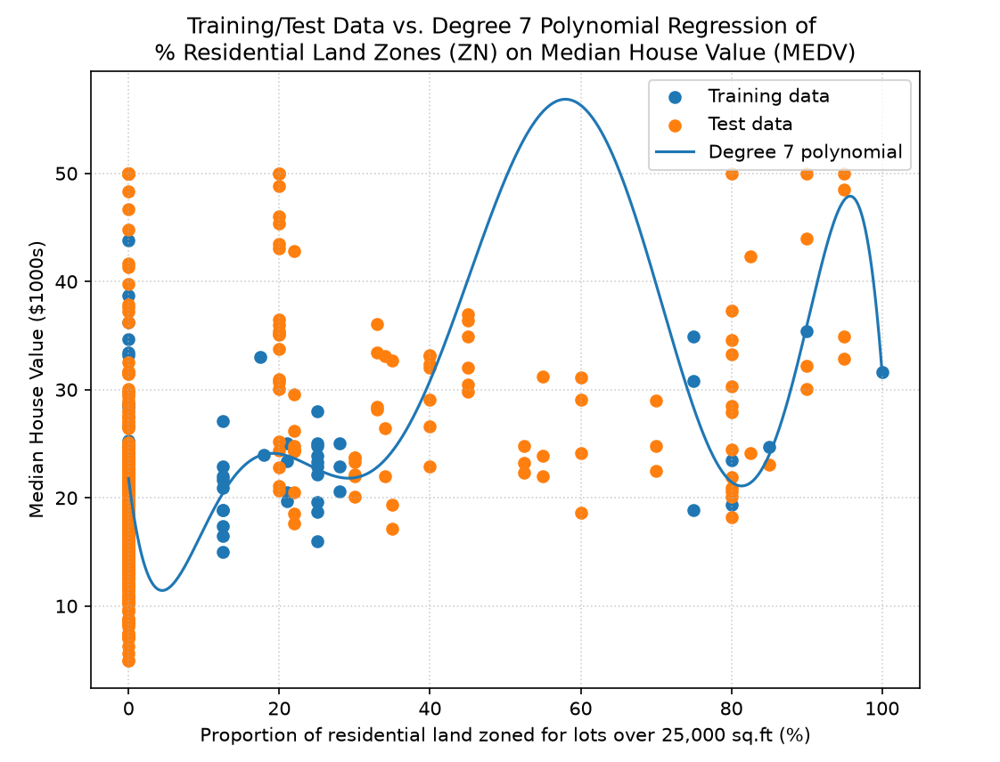
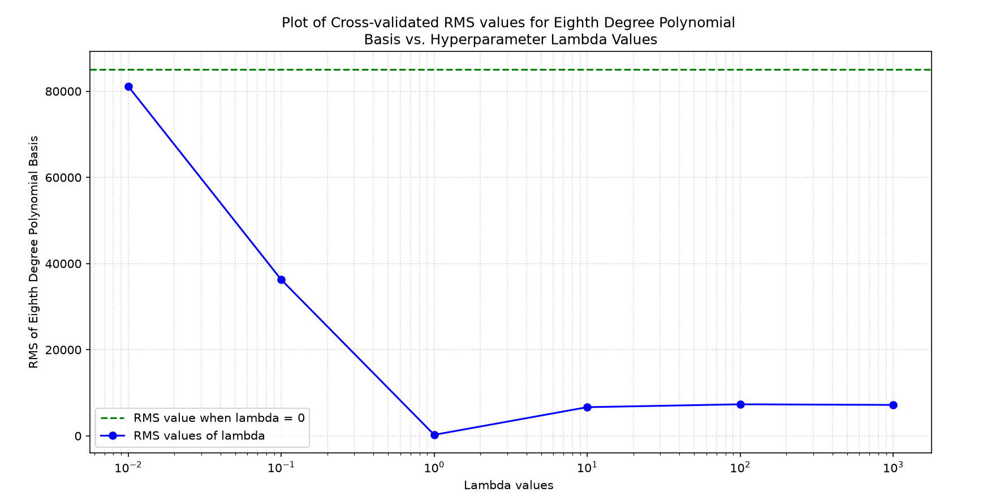

By Irina Khan, October 16, 2026
Overview
This assignment is aimed to implement a linear basis function regression with both polynomial and Gaussian basis. Part 1 focuses on the implementation of a linear regression with polynomial basis functions, ranging from a degree of 1 to a degree of 7. The Housing dataset has 506 sets of data points, where each point is made up of 13 different features and contains 1 column of the resulting y-values (aka y_hat) that we want to be able to predict.
Table of Contents
- Part a) Plots of Training Error and Test Error Versus Polynomial Degree
- Part b) Examining the Learned Weights of the First Polynomial Basis Function
- Part c) Examining the Learned Weights of the First Polynomial Basis Function
- Part d) Ridge Regression and Cross Validation of an Eighth Polynomial Basis Function
Part a) Plots of Training Error and Test Error Versus Polynomial Degree
The python script on the Assignment 2 Part 1 Code page implements the
functions basis_poly(), predictions_and_weight(), and RMS calculations for both the predicted y-values for the
batch of training data and for the predicted y-values for the test data.
The basis_poly() function takes in the training data set and the desired degree (D) of the polynomial functions,
and calculates the Phi function matrix that will be (1 + 13D) rows and 100 columns.
The reason that there is an additional row is due to the bias of each linear regression. The first row is for the constant
w_0 term, aka the bias, of the weight vectors.
The Phi function matrix is formed by solving the Phi functions (aka the 1, x, x^2, etc.) with the data sets (x1, x2, etc.)
plugged into them.
The pseudo-inverse of the Phi matrix is taken and is multipled with the training datas' corresponding
y values, which represent the corresponding median house values for the row of training data features.
7 different resulting polynomial solutions for the regression of the training data were created, each having an order
from a first order polynomial equation to a seventh order polynomial equation. The plot below shows
how well each polynomial equation is able to predict all of the original training data sets (100 data sets), and
how well the polynomial equations are able to predict the testing data sets (406 data sets).
Please note that due to the enormous range of RMS Testing Data Errors, a logarithmic
graph (on the y-axis) was chosen to show the RMS error values of the testing data effectively against
the RMS error values of the training data.
The numbers of each data point from the plot below are shown in the table underneath the graph.

| Order of Polynomial Basis Function | RMS Error of Training Data | RMS Error of Testing Data |
|---|---|---|
| 1st Degree | 2.03720 | 36.44495 |
| 2nd Degree | 1.57808 | 1,097.19 |
| 3rd Degree | 1.44910 | 48,672.82 |
| 4th Degree | 1.29698 | 38,940,165.54 |
| 5th Degree | 1.63171 | 518,752,707.18 |
| 6th Degree | 1.51172 | 8,996,049.88 |
| 7th Degree | 3.79916 | 61,494.75 |
In the graph, the RMS errors of the training data decrease as the order of the polynomial basis
function increases from a first-order polynomial (where the RMS error was 2.04) until the fourth-order polynomial.
(where the lowest RMS error achieved was 1.30) However, the RMS error of the training data increases for the
fifth-order, sixth-order and seventh-order polynomial to values of 1.63, 1.51 and 3.8 respectively.
This may be because the higher-order polynomial basis functions are overly influenced by the variations of the
features, becoming 'overfitted'.
It is clear that since the training data sets chosen were chosen arbitrarily, (as the first 100 data sets)
the trained polynomial regressions do a poor job at predicting the median house value of the remaining 406 sets
of testing data, because as the order increases from first-order to fifth order, the RMS errors explode in value,
ranging from 36.4 to 518 million. (As mentioned in the first paragraph, this is why a logarithmic
graph (applied to the y-axis) was chosen to show the RMS error values of the testing data.)
The training data range of data for all of the features is limited, and only covers a subsection of the spread found in various features inside
the testing data.
It is interesting to note that while the higher-order polynomials do a poorer job at predicting training data,
the sixth-order and seventh-order polynomial functions have a drastic drop in RMS error for testing data, showing that
their 'overfitted' nature actually helps them predict the testing data's median house values more effectively!
The improvement, however, is very slight, as the RMS error values drop from 518 million from the fifth-order polynomial
to about 8.9 million and 61.5 thousand for the sixth-order and seventh-order polynomials respectively.
Part b) Examining the Learned Weights of the First Polynomial Basis Function
The resulting learned weights of the first polynomial basis function can be seen in the table below:
| Weight Index | Variable Name | Description of Feature | Learned Weights w_i |
|---|---|---|---|
| 1 | Bias / Intercept | Constant basis function | -37.90420 |
| 2 | CRIM | Per capita crime rate by town | -3.45595 |
| 3 | ZN | Proportion of residential land zoned for lots over 25,000 sq.ft. | 0.00538 |
| 4 | INDUS | Proportion of non-retail business acres per town | -0.16878 |
| 5 | CHAS | Charles River dummy variable (1 if tract bounds river; 0 otherwise) | 1.10788e-12 |
| 6 | NOX | Nitric oxides concentration (parts per 10 million) | 21.51540 |
| 7 | RM | Average number of rooms per dwelling | 8.59096 |
| 8 | AGE | Proportion of owner-occupied units built prior to 1940 | -0.07924 |
| 9 | DIS | Weighted distances to five Boston employment centres | 0.00763 |
| 10 | RAD | Index of accessibility to radial highways | -0.13991 |
| 11 | TAX | Full-value property-tax rate per $10,000 | -0.00763 |
| 12 | PTRATIO | Pupil-teacher ratio by town | 0.15456 |
| 13 | B | 1000(Bk - 0.63)^2 where Bk is the proportion of {Black people} by town | 0.00664 |
| 14 | LSTAT | % lower status of the population | 0.02623 |
The weight value chosen for the sixth feature (w_6) which is the average number of rooms per dwelling,
is 8.59096.
The weight value chosen for the eighth feature (w_8) which is the weighted distance to five Boston employment centers,
is 0.00763.
The weights appear to make sense, as the number of rooms in a house would logically make sense to have
a large positive impact on the value of a house in a neighborhood, which tracks with the positive 8.59096 value obtained
for the 6th feature. The 8th feature, the weighted distance to five Boston employment centers, however, would have
little impact on the values of the houses in the neighborhood, as these centers may pop up in any urban street.
Thus, its small weight of 0.00763 feels proportionate for the tiny effect it would have on median house values.
Part c) Plots of 2nd order, 5th order and 7th order Polynomial Regression on a single Dataset Feature
Three plots of the training data points, learned polynomials, and test data points for a second-order, fifth-order and seventh-order polynomial are shown below.



It is evident that as the degree of the polynomial equation increases, the more closely the line swings
towards clusters of the training data.
However, in the seventh polynomial equation, since there was no training data present for zone proportional values
of 30% to 70%, the equation has a large swing upwards, which strays a large amount from the actual testing datasets.
This is a clear example of poor training data spread. If a few data points were present between 30% to 70%, the
linear regression of the 7th degree polynomial would have constrained the line to lie more closely to the training data,
and thus map the testing data more effectively as well.
Part d) Ridge Regression and Cross Validation of an Eighth Polynomial Basis Function
A plot of average validation set error versus the regularizing constant lambda is shown below, along with a table of all of the average RMS values per selected lambda value.

| Lambda | Average Validation RMS Value |
|---|---|
| 0 | 85029.84 |
| 0.01 | 81159.92 |
| 0.1 | 36268.06 |
| 1 | 246.52 |
| 10 | 6663.17 |
| 100 | 7331.90 |
| 1000 | 7184.78 |
As seen in the graph and the table above, the lambda value that minimizes the RMS value the most
is when lambda is equal to 1. Therefore, I would pick 1 as the regularizing constant for the
cross-validation testing of this eigtht-degree polynomial basis function.